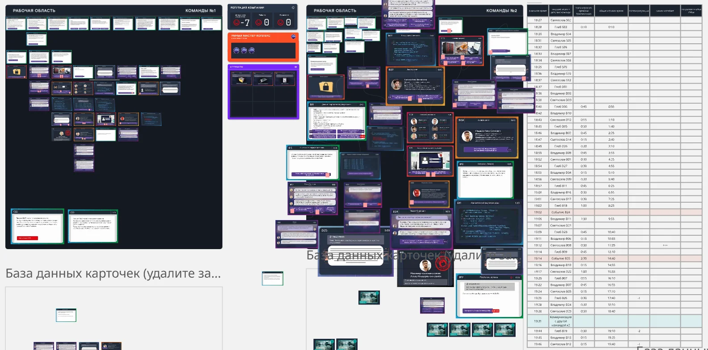
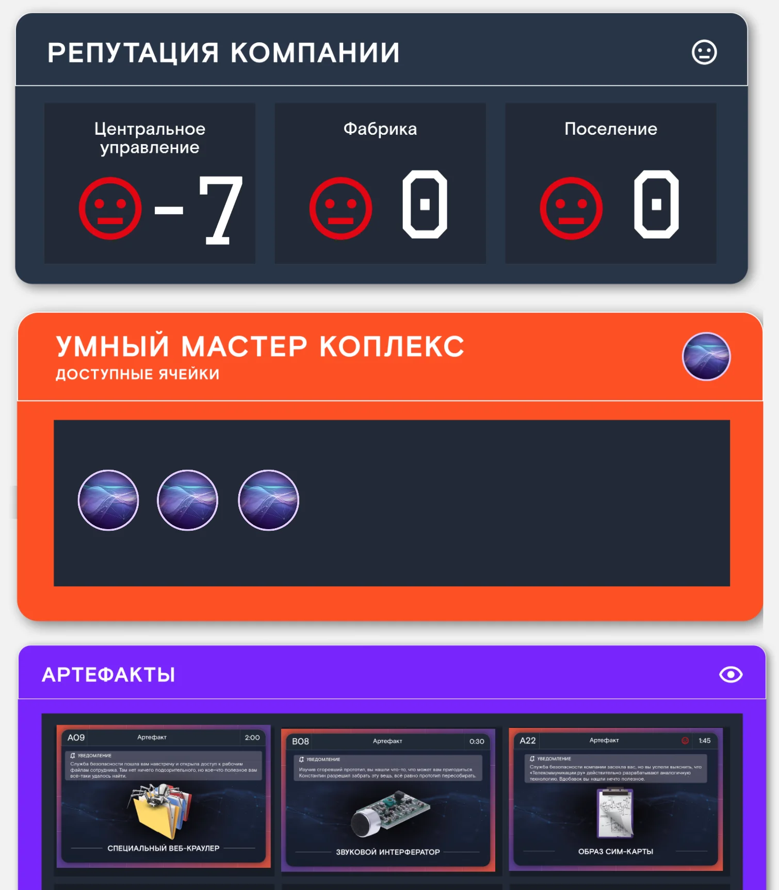
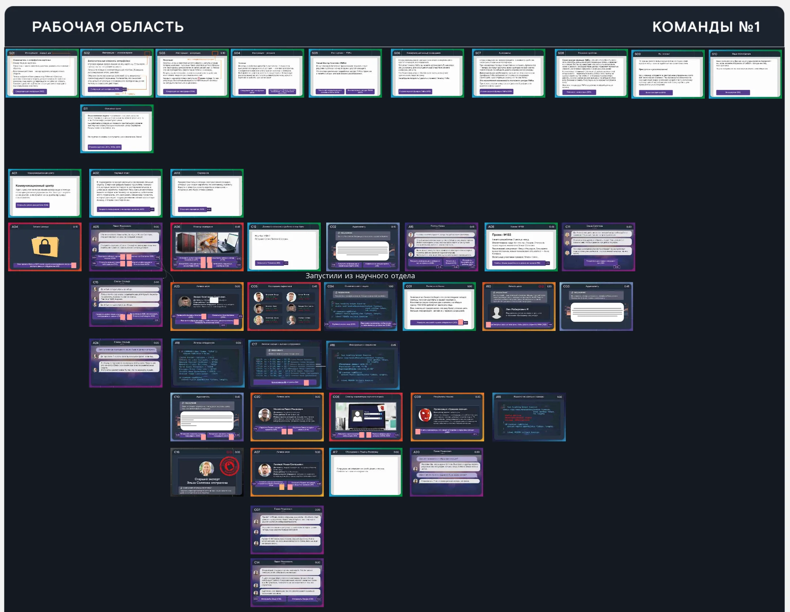
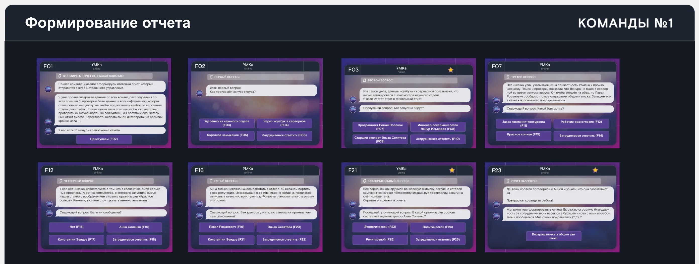
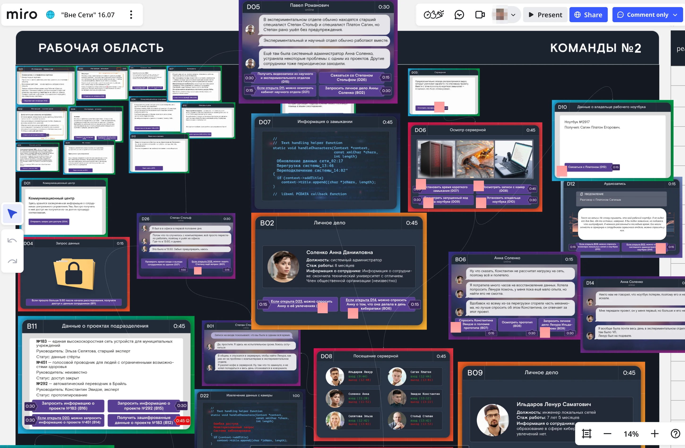
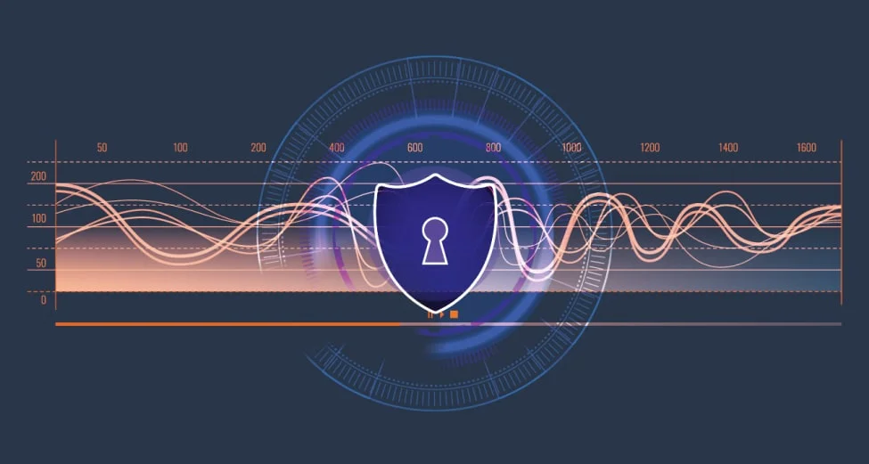
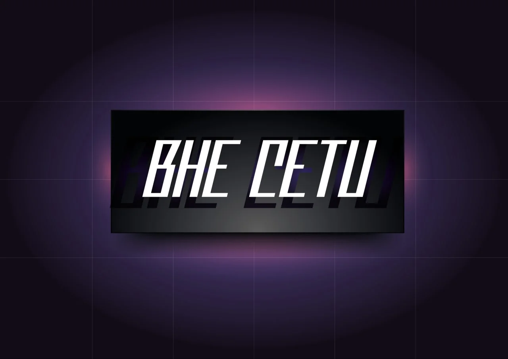

«Вне Сети» —
лайт без потери смысла
"Off the Grid" —
light without losing the point
Командная детектив-игра в карточном формате — вторая игра в серии для того же клиента, что и «Сеть». Запрос: лёгкий пост-стратсессионный формат, который не скатывается в квиз, но даёт реальный образовательный эффект и тренирует личную ответственность. Онлайн в Miro и настолка. A team detective card game — the second in a series for the same client as "Network". The brief: a light post-strategy-session format that doesn't slide into a quiz, but delivers actual learning and trains personal responsibility. Online in Miro and a tabletop edition.
Что этоWhat it is
Заказчик «Сети» вернулся с новым запросом: после стратсессий и тяжёлых совещаний нужен лёгкий формат, в который команда может «выдохнуть», но без потери смысла. Не квиз — он даёт эмоциональный подъём, но не учит. Что-то с расследованием и обязательным элементом личной ответственности: клиент прямо сформулировал, что хочет уйти от «команда решает» к «человек решает».
Сеттинг — продолжение мира «Сети»: компания «Аэроконнект», подпольная организация «Красное солнце», расследование диверсий на ключевых объектах. Команды-отделы расследований получают каждая свой кейс и распутывают его на наборе карточек-улик. Внутри хода ровно один человек становится активным и принимает финальное решение, что делать дальше. Это и есть ответ на запрос клиента: личная ответственность зашита в саму ротацию хода, а не вынесена в фасилитаторскую речь. Между командами общие ресурсы (время, репутация, артефакты) — расследования параллельные, но в коробке сидеть нельзя, иначе общая шкала схлопнется.
The "Network" client came back with a new brief: after strategy sessions and heavy meetings, the team needs a light format where they can exhale — without losing the point. Not a quiz — quizzes deliver an emotional bump but no learning. Something detective-flavoured, with a built-in element of personal responsibility: the client explicitly said they wanted to move from "the team decides" to "the person decides".
The setting continues the "Network" universe: the Aeroconnect company, the underground organization "Red Sun", investigations of sabotage at key sites. Investigation-team players each get their own case and unfold it across a set of clue cards. Within a turn, exactly one player becomes active and makes the final call on the next move — that's the answer to the client's brief: personal responsibility is baked into the turn rotation, not dumped into facilitator talking points. Between teams, time, reputation and artifacts are shared — investigations run in parallel, but you can't sit in your own silo, or the shared scale collapses.
Что я сделалWhat I did
Был директором игры и геймдизайнером: концепция, нарратив (продолжение мира «Сети»), баланс времени, репутации и общих ресурсов, структура расследования на карточках с ротацией активного игрока.
Сделал обе версии — онлайн в Miro и настолку. Проводил пилоты и тестирование прототипов с заказчиком.
I was Game Director and game designer: concept, narrative (continuing the "Network" world), the balance of time, reputation, and shared resources, the card-based investigation structure with active-player rotation.
Built both versions — online in Miro and the tabletop edition. Ran pilots and prototype tests with the client.
Компоненты и скриншоты Components & screenshots







NDA · Симулятор управления городом → NDA · City Management Simulator →
Цифровой симулятор для подготовки муниципальных команд. Unity-прототип → веб + офлайн-модули. A digital simulator for training municipal teams. Unity prototype → web + offline modules.